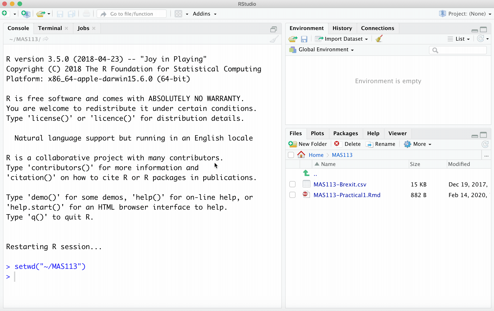
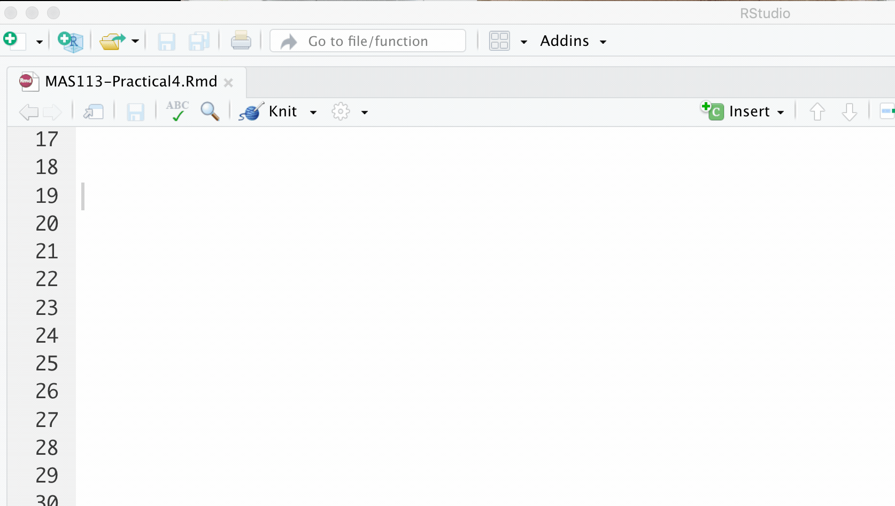

4 R practical 4: can brain-training games make you smarter?
4.1 Introduction
Various games have been devised which, according to their designers, can boost your intelligence if you play them regularly. How can we tell if they work? In this practical, you will analyse data from an experiment reported in Lawlor-Savage and Goghari (2016)2, designed to test the effectiveness of dual-n-back games compared with “processing speed training”.
In their experiment:
- 84 healthy adults, aged 30-60, were allocated at random to one of two games:
- dual-n-back, or
- processing speed training. (This is the control group. It is not believed “processing speed training” has any effect on intelligence.)
- 57 adults were included in the final analysis: these adults played their respective games on at least 13 occasions over a 5 week period, playing the game for around 30 minutes per occasion.
- The adults took various tests at the start (before playing any games) and end of the experiment.
In this practical, you will analyse their scores from one test: Raven’s Advanced Progressive Matrices (a test of fluid intelligence).
Try dual-n-back training for yourself, using the demo available here (you will need sound enabled).
- You will see a sequence: in each step, a square appears in one of the grid cells, and you will hear a letter.
- You have to remember what you saw and heard two steps back in the sequence
- Press the appropriate keys whenever the position of the square and/or the letter is repeated from two steps back.
(It’s hard!)
Data are in the file brain2.csv, available on Blackboard. The column headings are
subject: a label for each participant;game: which game the participant trained with: dual-n-back, or speed processing training.RAPM1: the score on Raven’s Advanced Progressive Matrices (RAPM) before training;RAPM2: the score on Raven’s Advanced Progressive Matrices after training;RAPM.improve: the change between the two scores (RAPM after training - RAPM before training)
4.2 Tasks
- Inside your folder for this module, create another folder:
Practical 4.
- Download the R Markdown document
Practical4.Rmdand databrain2.csvfrom Blackboard, and put these files into yourPractical 4folder. You must put your solutions to the following tasks in the R Markdown document.
(This animation is from R Practical 1, but you need to do the same sort of thing here. Change the title at the top, as well as the author name.)

- Import the data into R, storing it as a data frame called
brain. You need to do this using a suitable command inside your .Rmd document. If you import your data some other way, although you will still be able to do tasks 4-7, your .Rmd document will not compile successfully.
- Copy and modify this lecture notes example: importing data
- Here, rather than
maths.csv, you are importing a file calledbrain2.csv. - You need to store the result as
brainrather thanmaths.
- For all the participants in the study, find the mean and interquartile range of the RAPM scores taken at the start of the experiment.
- You can get various summary statistics using the
summary()command. Here is an example. - The interquartile range is defined here.
- Assuming RAPM scores are normally distributed, calculate a 95% confidence interval for the population mean RAPM score at the beginning of the experiment. (You can treat all the participants as a single sample, ignoring which game they played: none of the participants had played either game at the start of the experiment).
- See this example for extracting the values of a column from a data frame.
- The confidence interval formula is given here.
- Use the functions
mean()andvar()for computing the sample mean and the sample variance, and see here for working with the \(t\)-distribution in R.
- Conduct a suitable hypothesis test to test whether the dual-n-back game has improved intelligence, compared with speed processing training. Find the 95% confidence interval for the difference between mean improvements in the two groups
To do a two-sample \(t\)-test in R, see Section 7.6.1.
- Using one of the types of plots described in Chapter 1, produce a suitable plot to compare the improvements in RAPM scores between the two groups.
- Specify axes labels to make them more descriptive;
- Add a caption, stating what the plots suggest regarding whether the dual-n-back game has improved intelligence.
- One of the plot types in Chapter 1 is described as being useful for comparing groups.
- To add a caption, use a code chunk option
fig.cap = "Insert your caption here"

4.3 Data source
The data were obtained from (https://figshare.com/articles/Working_Memory_Training_in_Healthy_Adults/3121582) [Accessed 20/12/17]
Lawlor-Savage L, Goghari VM (2016) Dual N-Back Working Memory Training in Healthy Adults: A Randomized Comparison to Processing Speed Training. PLoS ONE 11(4): e0151817. (https://doi.org/10.1371/journal.pone.0151817)↩︎